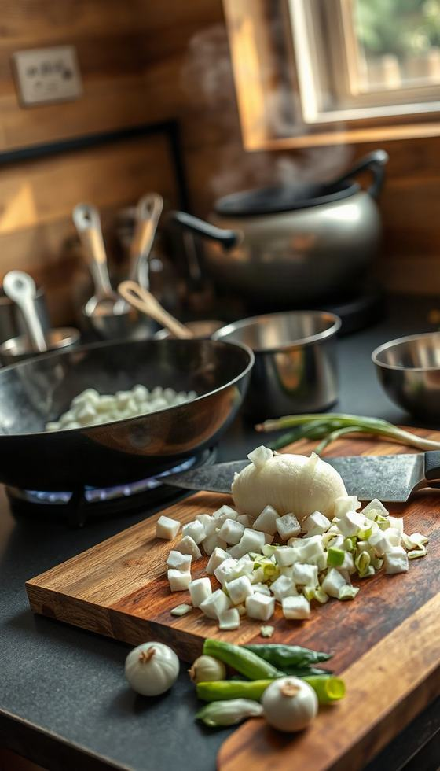
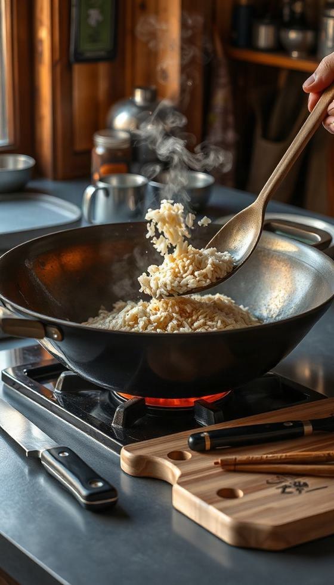
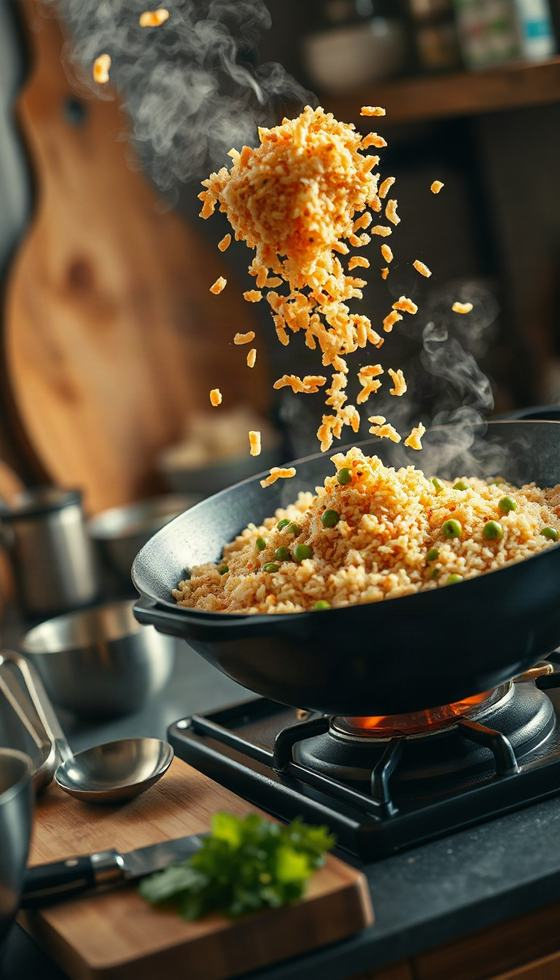

Fridge Raid Friday
Takeout-Style Egg Fried Rice with Peas and Onion
About $3.94* · 2 servings · 20 min
*Prices are estimates and may differ from what you pay. How we price recipes
Leftover rice, 3 eggs, frozen peas and half an onion became takeout-style egg fried rice, $1.97 a serving.




Ingredients
- 3 cups cooked (about 190 g dry) Leftover cooked white rice, cold
- 3 large Eggs
- 1/2 cup (about 75 g) Frozen peas
- 1/2 medium (about 75 g), diced Onion
- 2 tbsp Vegetable oil
- 2 tbsp Soy sauce
- 2 cloves, minced Garlic
- 2 stalks, sliced Green onions
- 1 tsp Toasted sesame oil
- to taste Salt and black pepper
Steps
- Break up the cold rice with your fingers or a fork so there are no big clumps. Set it aside.
- Dice the half onion, mince the garlic, and slice the green onions, keeping the white and green parts separate.
- Crack the 3 eggs into a bowl, add a pinch of salt, and beat with a fork until smooth.
- Heat 1 tbsp oil in a wok or large nonstick pan over medium-high heat. Pour in the eggs and stir gently until just set and no longer runny, about 1 minute.
- Move the eggs to a plate and wipe the pan if needed.
- Add the remaining 1 tbsp oil. Cook the onion and green onion whites for 2 to 3 minutes until softened.
- Add the garlic and stir for 30 seconds until fragrant.
- Add the rice and spread it out. Let it sit 1 minute to crisp, then stir and repeat for about 4 minutes.
- Stir in the frozen peas and cook 2 minutes until hot.
- Drizzle the soy sauce around the edge of the pan and toss everything to coat.
- Return the eggs, breaking them into pieces, and toss until the rice is steaming hot all the way through.
- Turn off the heat, stir in the sesame oil and green onion tops, and season with pepper. Serve right away.
What you'll need
Gear links go to Amazon (Amazon.ca, or Amazon.com in the US). As an Amazon Associate I earn from qualifying purchases, at no extra cost to you.
About the prices: they're estimates, not quotes. Since Nov 2026 they're based on Statistics Canada's monthly average retail prices where an item is listed (Open Government Licence - Canada), otherwise on typical Canadian grocery prices, and count only the amount of each ingredient used, not whole packages. What you pay will vary by store, location, brand, sales, taxes and date, and any pantry staples you need to buy will add to it. Recipe visuals and narration are AI-generated.